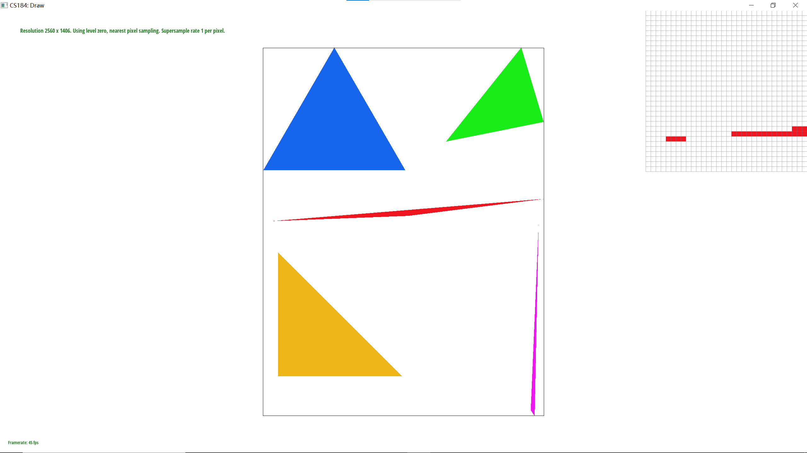
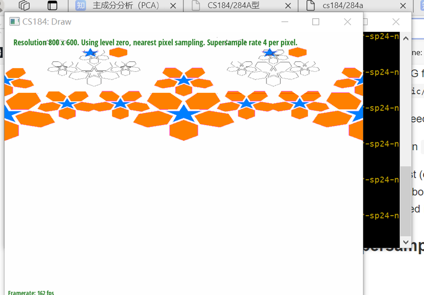
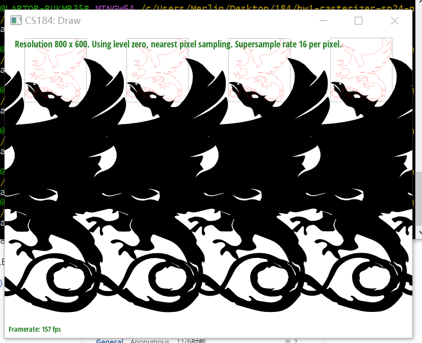
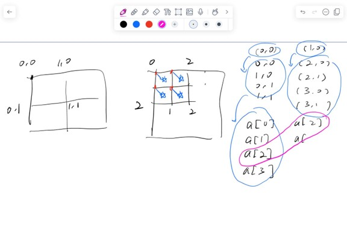
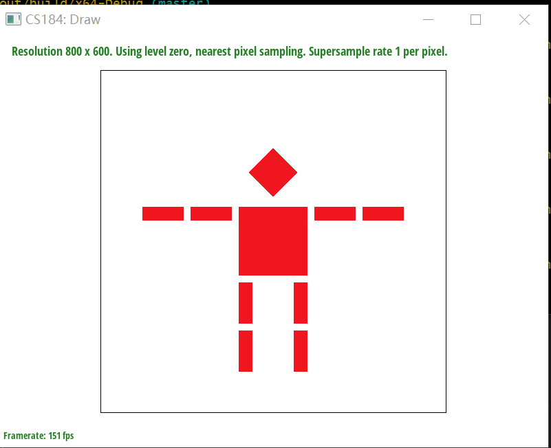
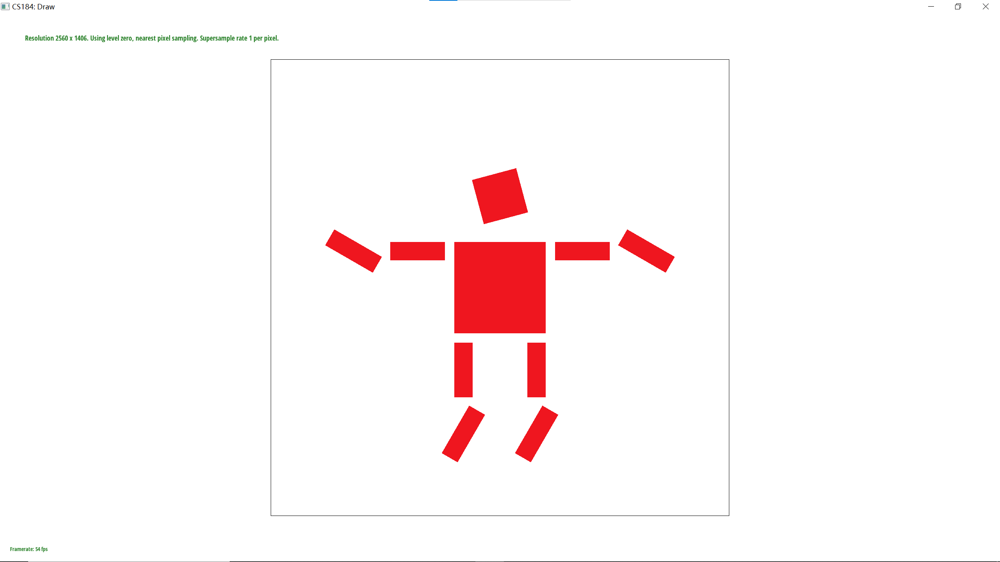
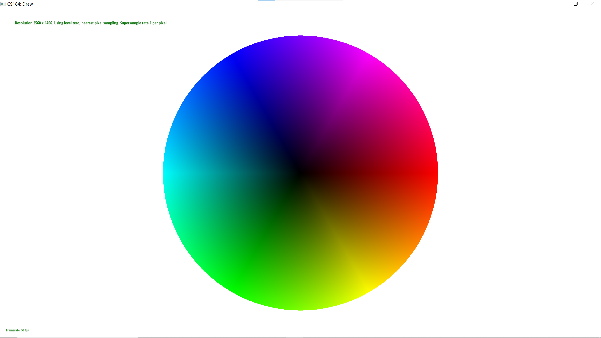

Overview
In the vector graphics renderer, a simple rasterizer has been implemented, and now the framework can perform graphic rasterization, super sampling, and texture mapping. It allows for the use of different sampling rates, and the choice of pixel sampling methods and Mipmapping level sampling methods.The entire implementation process not only covered the basics of graphic rendering taught by the teacher in the first three weeks but also allowed me to explore in depth different methods of optimizing image quality during the rendering process. I now understand how computer graphics "work" and am excited about this new field of knowledge, eager to create more astonishing visual effects.
The most interesting part of the course is reading the posts on Ed, where various errors lead to chaotic rendering effects in graphics: overlaps, missing parts, incorrect mappings. These seem very amusing at first; however, when my code also started exhibiting similar issues, it didn't seem as funny.In all, the joy of this course lies in transforming theoretical models and mathematical formulas from textbooks into a truly complex and usable code framework. Although it's just the first assignment, I felt tired, surprised, and an endless desire to learn.
Section I: Rasterization
Part 1: Rasterizing single-color triangles
Concept
Rasterizing a triangle involves dividing the image into countless triangles (as a triangle can be assured to lie on a single plane), determining which pixels fall within a given triangle, and assigning those pixels the corresponding color.
Code Implementation
Check the arrangement of the triangle's vertices (clockwise or counterclockwise). If the vertices are arranged clockwise, we swap them to counterclockwise to ensure the correctness of subsequent algorithms.
Calculate the bounding box of the triangle, i.e., find the smallest rectangle that can completely contain the triangle. This is achieved by taking the minimum and maximum x and y values of the three vertices.
Iterate over each pixel within the bounding box and use the edge function to check if the center of this pixel lies within the triangle. If so, the pixel is assigned a color.
 basic/test4.svgExtra Points
By first determining the bounding box, the number of pixels that need to be checked is limited. There is no need to compute pixels outside the bounding box.
When traversing pixels, the value of the edge function can be incrementally calculated from one pixel to the next, rather than independently computed for each pixel. This method takes advantage of the spatial relationship between pixels, further improving efficiency.
Below shows the time difference between Initial method and Improvement methods.
| Method\Test | test3 | test4 | test5 | test6 |
|---|---|---|---|---|
| Initial | 9.5477 ms | 0.8367 ms | 0.7005 ms | 2.4357 ms |
| Improvement | 9.4972 ms | 0.7325 ms | 0.6945 ms | 2.3156 ms |
Part 2: Antialiasing triangles
Concept
Due to points farther from the camera corresponding to a larger pixel area in the texture space, adjacent sampling points change too quickly, resulting in undersampling. Supersampling, which divides a pixel into more subpixels for sampling, can reduce the gap between adjacent pixels and make the image smoother.
How to use supersampling to eliminate jagged edges in triangles
Increasing the Sample_Rate adds more sampling points. For each pixel, the rasterization process is executed on its subpixels, and after completing the sampling for all subpixels, their color values are averaged to determine the color of that sampling point.
Walkthrough
Task 2 is torturous for beginners; it took me a full 5 hours to complete. However, this process is transformative, making me thoroughly familiar with the codebase and deeply understanding the transition from the theoretical concept of supersampling to its code logic. It's very difficult, but the unmatched sense of achievement when pressing the Z key to see the finely sampled result is worth it.
First, I was clueless with a bunch of functions, so I read the guidance and hints for task 2 very carefully. However, I found them to be quite disorganized, and I needed to sort out the order first.
The first step was to start with the triangle function, which I was more familiar with since I had just completed it in task 1. So, I referred back to the slides and understood why we needed to set a new buffer and expand it by sqrt{sample_rate}*sqrt{sample_rate}.
The second step involved modifying the simplest part, which was to expand the buffer size by the sample_rate and ensure clear is called in a timely manner.
The third step was to tackle the mathematical problem. The core issue now was to establish a mapping from the original samples to a buffer space and then to a one-dimensional array. I completed the calculations without pen and paper, which in hindsight was a foolish decision.
The fourth step was deciding where to implement the supersampling logic. Since the function drawing pixels could only read integers, I decided not to change the pixel drawing but to implement it in the triangle function. I scaled each point by sqrt{sample_rate}, so in the loop, adding 1 to the step size was equivalent to moving it by 1/sqrt{sample_rate}, which wouldn't affect the input integers. Then, I judged each sub-node and input the same color directly according to the hints. Finally, in resolve_to_framebuffer, mapping the expanded space back and averaging it yielded the result.
After completing this, I eagerly began drawing, and as expected, many errors awaited correction.
Debug Pipeline:
Problem 1: Testing with sample_rate set to 1, only the lower-left part was colored, and the rest was white.
Solution to Problem 1: Incorrect inner loop variable.
Problem 2: Not only was the image copied, but the color also became lighter, and even the spatial dimensions were scaled.
Solution
The issue was with the resolve_to_framebuffer() function, specifically, the boundaries were not correctly set when iterating through each node's subnodes, leading to spatial scaling.
Problem 3: Only the spatial issue was resolved.
After a lot of thought, it was clear that the code had many issues, not just one. I spent a long-time browsing Ed and reading everyone's suggestions. I also sketched out the mapping process.
Then I pondered the next issue: Why was it copied sqrt{sample_rate} times, and why did the color become lighter? Looking at the intuitive mapping changes, we observe \((x,y)->c^2 * (cx,cy)->array[cx+cy+cw]c^2 / c^2\). It's noticeable that there's an extra coefficient of c in the final step, meaning it wasn't mapped back to the same position but was directly mapped to multiple positions! (This realization was particularly challenging, and it took me a long time to come to this conclusion.)
I immediately realized that not modifying the fill_pixel function could cause multiple mappings:
sample_buffer[y * width * rate_div + x] = c;
Then, I corrected resolve_to_framebuffer:
size_t sample_index = (temp_y * width * rate_div) + temp_x;
And added the same logic in rasterize_point.
Completed! This solution outlines the process of debugging and resolving issues related to super sampling in graphics rendering. It involves understanding the underlying mathematical and spatial mappings, adjusting algorithms to correctly handle increased sample rates, and ensuring that color and spatial scaling are correctly managed to achieve the desired rendering quality.
comparison
Description
It can be observed that there is a noticeable difference at the tips of the triangles. Insufficient sampling rate causes the area covered by sampling points at sample_rate=1 to be too large, resulting in significant differences between adjacent pixels. Consequently, the sharp tips of the triangles are not continuously restored; they even appear disconnected. However, as the sampling rate increases, the pixels at the edges are gradually captured, eventually connecting them together.
This phenomenon highlights the importance of an adequate sampling rate in rendering processes, especially when dealing with sharp edges or fine details. At low sampling rates, the renderer struggles to accurately capture and reproduce the intricate details of the geometry, leading to artifacts such as disconnected edges or jagged appearances. As the sampling rate increases, more samples per pixel are taken, allowing for a more detailed and accurate representation of the image, smoothing out edges and connecting disjoint parts. This improvement is crucial for achieving high-quality rendering results, demonstrating the effectiveness of supersampling in reducing aliasing and enhancing the visual fidelity of the rendered scene.
Task 3 (10 pts)
The core of the task is to assign some transformation matrices to achieve spatial projection. I completed the code quickly according to the content of the slides.
 task3 robot  DIY robotDescription
I made the second part rotate, and the first part doesn't change. Now the robot is doing the windmill dance, haha.
Section II: Sampling
Part 4: Barycentric coordinates
Concept
Barycentric coordinates essentially refer to the intersection of the three medians of a triangle, which is the centroid. We need to pay attention to the position relationship relative to the polygon's vertices to determine the "closeness" of the color of a point to the colors of the vertices.
The coefficients are determined by the ratio of the area of the triangle opposite each vertex (formed by the centroid and that vertex) to the total area of the triangle. This can be proven mathematically. Alternatively, this can be viewed as a coloring problem, where each triangle adjacent to a vertex must be a different color than the vertex. Then, averaging the colors of the three triangles painted in three different colors yields the centroid's color.
If \(\lambda_ i=1\) while the other two are 0, then point P is exactly at vertex A; if all weights are greater than 0, then point P is inside the triangle; if a weight is 0, P lies on the edge opposite to the vertex corresponding to that weight.
This part of the code mainly reuses task 2, requiring only that the color part be changed to use the centroid coordinate system of the vertices.
However, I made a mistake here, which will be mentioned later in the blog.
Part 5: "Pixel sampling" for texture mapping
Concept
Pixel sampling involves selecting some sample points from the original image and then using these sample points to reconstruct the image. This is similar to how signal and system theory uses frequency space to restore time domain space. Nearest neighbor sampling directly uses the closest point in the texture space corresponding to the sampling point, while bilinear sampling selects the closest four vertices around and uses the distance ratio for linear interpolation.
Implementation
This task is essentially reusing the code from task 2.
For linear interpolation, I was puzzled about how to find the point to the left and above x, as this could potentially result in an out-of-bounds issue. I asked AI, and it suggested using u-floor(u, which is quite clever. If the point to be interpolated (u,v) is exactly at a vertex, it is assigned directly. If it's not at a vertex, we can always find such a point without going out of bounds.
However, I found many white lines in my image. After consulting Ed, it was suggested that it might be because the triangle vertices are arranged clockwise, while I still processed them counterclockwise.
I was confused because I had already implemented this in task 1: checking the order of vertices and swapping them if they are in clockwise order. Why then do I encounter the same problem as someone else?
Another post on Ed inspired me. It turns out that in reusing the code from task 2, I only swapped the values of x and y, but not the values of u, v! (since c in the task was constant).
Another point to note is that because linear interpolation needs to find the points around u,v, it's necessary to prevent out-of-bounds errors. The oversampling in test 2 showed an out-of-bounds phenomenon, which can be resolved by setting the correct data offset value (here it's set to 0)
The best example: test6
Explanation
We can clearly see that when each pixel is sampled equally, there will be significant differences between the two methods in areas that are magnified, distorted, or compressed.
In the stretched/compressed areas, the difference between bilinear sampling and nearest neighbor sampling is most pronounced when using different MIP mapping levels.
Bilinear sampling provides a better visual effect compared to nearest neighbor sampling because the nearest neighbor method directly selects the nearest point for reference, leading to more noticeable transitions between different points and, to some extent, increasing the pixelated boundaries' jaggedness. Bilinear sampling considers multiple pixels around the texture; by interpolating the four nearest texture pixels, it reduces the abrupt changes and jaggedness of the texture, thus adjusting the chosen mip level under different viewing conditions to provide a more consistent visual effect, which is smoother.
Part 6: "Level sampling" with mipmaps for texture mapping
Moiré pattern
In the entire assignment, the most common and crucial issue to address is the Moiré pattern.
When a triangle (or other shapes) is large in the view, that is, closer to the camera, it occupies more pixels. In such cases, the texture coordinates of adjacent pixels do not differ significantly, leading to minor differences in the sampled texel values from the texture image. Consequently, the image appears visually smooth and continuous, with no noticeable unnatural transitions. Additionally, the GPU can quickly read these similar texel values from the cache, enhancing rendering efficiency.
Conversely, when the triangle is small in the view, meaning it is farther from the camera, it occupies fewer pixels. Currently, a small graphic area is mapped to a larger texture area, causing significant differences in texture coordinates between two adjacent pixels. Therefore, the differences between sampled texel values will also be large, causing the image to appear visually abrupt and discontinuous, resulting in the Moiré pattern effect. In this case, if one were to reduce the Moiré pattern through super sampling, the computational load would be very high.
Mipmap
Mipmapping is a technique that pre-computes and stores multiple resolution versions of a texture, with each version having half the resolution of the previous one. When rendering, the most appropriate MipMap level is chosen based on the distance of the graphic from the camera (i.e., the size of the graphic on the screen). Thus, for distant small objects, a lower resolution version of the texture can be used, reducing the differences between texture coordinates, and effectively decreasing the occurrence of Moiré patterns. This also reduces the GPU's computational burden because it does not need to sample tiny parts from a large texture.
Implementing MipMap
First, compute different levels of the mipmap in advance. Then, map the sampling point to the texture space through the barycentric coordinate system, calculate the change amount in different directions (i.e., the gradients of x and y), and take the maximum value L. Finally, take log to get D, which provides information about adjacent pixels, which can be used to estimate the appropriate level of texture to use. After that, there are two methods:
- Take the nearest integer level.
- Take the upper and lower integer bounds, perform linear interpolation to find the color values for each, and then perform linear interpolation between them based on their distance to the floating-point number D.
Result
Description
It can be observed that for areas that are far from the camera and distorted, using the highest resolution image of level 0 with P_NEAREST without interpolation processing results in a lot of noise. The jaggedness is very obvious. Switching to bilinear interpolation, the noise is reduced somewhat, and the lines become more coherent.
After switching to the nearest mipmap level, the abrupt color noise disappears, although there are still some jaggedness and discontinuities at the edges of mountains, with pixel differences. Continuing to use the combination of the nearest mipmap level + P_NEAREST yields the best result: there are no longer large blocks of color difference in the image, and it becomes very smooth.
Overall Comparison
If speed is the priority, without concern for memory usage and anti-aliasing quality, then low sample rate at level 0 sampling is best.
If high anti-aliasing quality is desired, use a high sample rate or trilinear interpolation sampling.
If you want good anti-aliasing effects, but the speed can't be too slow and memory usage must be low, using NEAREST level sampling is a good choice.
Number of samples per pixel
- A low Sample Rate is fast and uses less memory but has very poor anti-aliasing.
- A high Sample Rate is slow and uses a lot of memory but provides the best anti-aliasing.
Pixel Sampling
- Nearest neighbor sampling is fast and uses less memory but lacks smoothing, leading to poorer anti-aliasing.
- Bilinear interpolation sampling is slower and uses more memory but slightly better at anti-aliasing.
Level Sampling
- Level 0 sampling is fast, uses the most memory, and has the poorest anti-aliasing effect.
- NEAREST level sampling requires the least memory, is relatively fast, and has a better anti-aliasing effect.
- Trilinear interpolation sampling is the slowest, requires less memory, and has the best anti-aliasing effect.
Debug Experience
Problem: The image is entirely magenta.
Obviously, this was because the level range was not restricted, so I limited the level to below 8 (as suggested on Ed) and set it to return 0 directly when the level is <0.
However, I found the image still very blurry; the nearest showed vertical stripes, and trilinear interpolation was very blurry.
I pondered this for a long time. Someone on Ed mentioned it might be due to out-of-bounds issues causing problems with derivative calculations. So, I added strict check conditions, if x+1 is out-of-bounds, then use x−1, and the same for y. The result did not change.
After numerous attempts, I was certain the issue was with the gradient calculation. Finally, I realized that:
\[float ddx_u = u_x_plus_1 - u;\]
Here, I had already calculated the gradient once, but after passing it into sample() I subtracted ddx_u by u again, causing the mapping to fail. The problem was eventually solved.